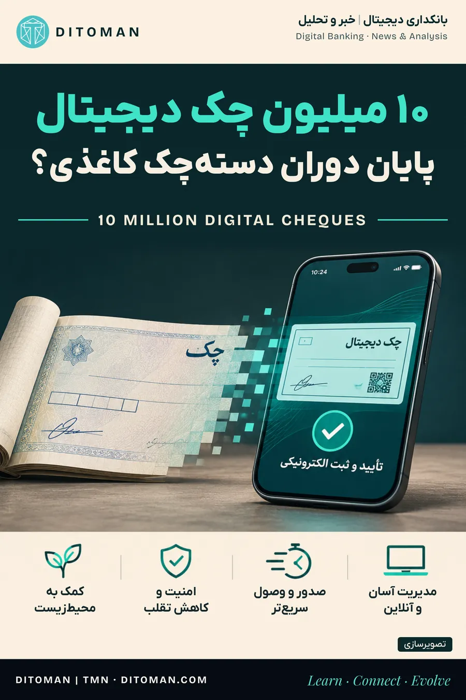
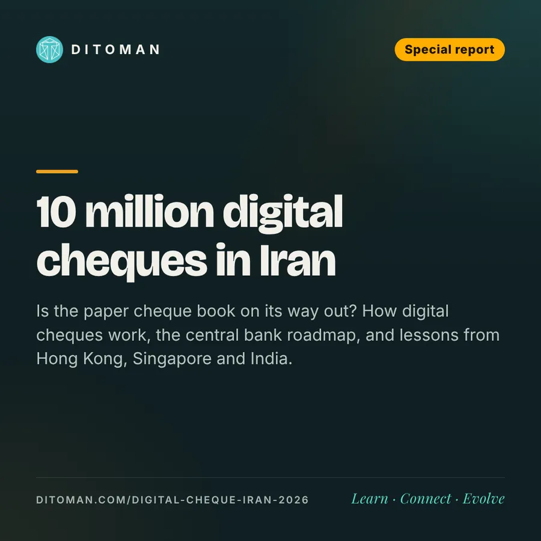

۱۰ میلیون چک دیجیتال؛ آیا دوران دستهچک کاغذی رو به پایان است؟
10 million digital cheques: is the paper cheque book on its way out in Iran?
چک دیجیتال چطور کار میکند، نقشهی راه بانک مرکزی چه میگوید، دنیا چه کرده و چطور امن از آن استفاده کنیم
How digital cheques work, what the central bank roadmap says, what other countries did, and how to use them safely
بانک صادرات میگوید مشتریانش بیش از ۱۰ میلیون برگ چک دیجیتال صادر کردهاند و بانک مرکزی برای کل شبکهی بانکی نقشهی راه حذف تدریجی چک کاغذی را از مهر ۱۴۰۵ آغاز کرده است. این گزارش توضیح میدهد چک دیجیتال چیست، چطور کار میکند، دنیا چه کرده و برای مردم و کسبوکارها چه چیزی تغییر میکند.
1. خبر چیست؟
بانک صادرات ایران اعلام کرده از دی ۱۴۰۱ تا پایان مهر ۱۴۰۵، مشتریانش ۱۰ میلیون و ۲۷۳ هزار و ۳۶۵ برگ چک دیجیتال از طریق خدمت «چکنو» صادر کردهاند. این آمار در ۱۹ آبان ۱۴۰۵ منتشر شد و بانک صادرات خود را در صدور چک دیجیتال رتبهی نخست شبکهی بانکی معرفی کرده است. همین بانک پیشتر گفته بود ارزش چکنوهای وصولشده در شش ماه نخست ۱۴۰۵ نسبت به سال قبل ۹۴٪ رشد کرده است.
این آمار تجمعی است، یعنی حاصل نزدیک به چهار سال، و ادعای خود بانک است. اهمیت خبر بیشتر در جهتی است که نشان میدهد: چک، یکی از قدیمیترین ابزارهای معاملات مدتدار در ایران، در حال دیجیتال شدن است.
2. چک دیجیتال دقیقاً چیست؟
یک مثال: فروشندهای لوازم خانگی به ارزش ۱۵۰ میلیون تومان میفروشد و خریدار قرار است سه ماه بعد پول را بدهد.
- روش کاغذی: خریدار برگ چک را مینویسد، امضا میکند و حضوری تحویل میدهد. فروشنده باید برگ را نگه دارد و در سررسید به بانک ببرد
- روش دیجیتال: خریدار در اپلیکیشن یا اینترنتبانک، چک را با امضای دیجیتال صادر میکند. فروشنده آن را در اپلیکیشن بانک خودش میبیند، تأیید میکند و در سررسید برای وصول ارائه میدهد یا به نفر بعد منتقل میکند
چک دیجیتال از نظر حقوقی همان چک است: همان تعهد پرداخت در تاریخ مشخص، با همان قواعد سابقهی چک برگشتی و اعتبارسنجی. تفاوت در ابزار صدور است، نه در تعهد.
امضای دیجیتال چطور کار میکند؟
- پس از احراز هویت دارندهی حساب، یک کلید الکترونیکی یکتا برای او صادر میشود
- امضا تصویر اسکنشدهی امضای دستی نیست؛ با همین کلید ساخته میشود و به شخص، گوشی و سیمکارت او گره خورده است
- هر تغییری در چک بعد از امضا، حتی مبلغ، امضا را باطل میکند
- صدور با احراز هویت چندمرحلهای و شمارهی تلفنی که به نام خود فرد است انجام میشود
- دستهچک الکترونیکی هم مثل دستهچک کاغذی صادر میشود و از ۱۰ برگ شروع میشود
3. اسمها را قاطی نکنیم
| نام | چیست؟ |
|---|---|
| صیاد | سامانهی یکپارچهی صدور و ثبت چک بانک مرکزی؛ هر چک (کاغذی یا دیجیتال) شناسهی صیادی دارد |
| چکاد | زیرساخت مرکزی چک الکترونیکی در شبکهی بانکی |
| چکاوک | سامانهی تبادل و تسویهی چک بین بانکها |
| چکنو | نام تجاری خدمت چک دیجیتال بانک صادرات |
4. کاغذی در برابر دیجیتال
| چک کاغذی | چک دیجیتال | |
|---|---|---|
| صدور | دستی، با خودکار | در اپلیکیشن یا اینترنتبانک |
| امضا | دستخط، قابل جعل | امضای دیجیتال گرهخورده به شخص و گوشی |
| تحویل | حضوری | غیرحضوری |
| گم شدن یا سوختن | ممکن | برگهای وجود ندارد |
| انتقال به نفر بعد (پشتنویسی) | روی برگ | در سامانه، با سابقهی ثبتشده |
| پیگیری | دستی | سابقهی صدور، دریافت و انتقال در سامانه |
| تضمین پرداخت | ندارد | ندارد |
5. وضعیت کل شبکهی بانکی
- بانک مرکزی گفته از آغاز طرح تا تیر ۱۴۰۵ بیش از ۸ میلیون و ۴۰۰ هزار چک الکترونیکی در کل شبکهی بانکی صادر شده است
- برای مقایسه با حجم کل چک: در مرداد ۱۴۰۵ بیش از ۸٫۳ میلیون فقره چک فقط در یک ماه بین بانکها مبادله شد (چک کاغذی و الکترونیکی با هم). ۸۷٫۶٪ از نظر تعداد و ۸۵٫۹٪ از نظر مبلغ وصول شد
یعنی کل چکهای الکترونیکی صادره تا تیر ۱۴۰۵ تقریباً هماندازهی چکهایی است که فقط در یک ماه بین بانکها جابهجا میشود. چک دیجیتال رشد کرده، اما هنوز سهم کوچکی از کل بازار چک دارد.
6. نقشهی راه بانک مرکزی
بانک مرکزی اجرای «نقشهی راه توسعهی چک الکترونیکی» را از ۱ مهر ۱۴۰۵ آغاز کرد. دو ابزار اصلی:
- سقف دستهچک کاغذی که از مهر ۱۴۰۵ بهصورت پلکانی کاهش مییابد
- سهم هدف چک الکترونیکی از کل دستهچکهای صادرشده در هر بانک:
| مهلت | سهم هدف چک الکترونیکی |
|---|---|
| پایان آذر ۱۴۰۵ | ۲۵٪ |
| پایان اسفند ۱۴۰۵ | ۴۰٪ |
| پایان اردیبهشت ۱۴۰۶ | ۶۰٪ |
| پایان تیر ۱۴۰۶ | ۸۰٪ |
هدف مشابهی برای سهم واگذاری غیرحضوری چکهای الکترونیکی هم تعیین شده است. این اعداد هدفاند، نه آمار تحققیافته؛ پلههای ۲۵٪ و ۸۰٪ در گزارشهای متعدد آمده و پلههای میانی بر اساس گزارشهای رسانهای است.
7. دنیا چه کرده؟
کشورها سه مسیر متفاوت رفتهاند:
| کشور | مسیر | جزئیات |
|---|---|---|
| هنگکنگ | چک کاملاً الکترونیکی | از ۷ دسامبر ۲۰۱۵؛ ارائهی آنلاین یا موبایلی، با «صندوق e-Cheque» که بیش از ۱۵۰ بانک را پوشش میدهد |
| سنگاپور | حذف چک و جایگزینی | از ۲۸ ژوئیهی ۲۰۲۵ ابزارهای پرداخت مدتدار الکترونیکی EDP و EDP+ در ۷ بانک؛ از ۱ ژانویهی ۲۰۲۶ دستهچک شرکتی دلار سنگاپور صادر نمیشود و از ۱ ژانویهی ۲۰۲۷ پردازش آن متوقف میشود؛ چک افراد فعلاً میماند |
| هند | دیجیتال کردن تسویه | سامانهی CTS از ۲۰۰۸ (دهلی) تصویر چک را بهجای خود برگ منتقل میکند؛ از اکتبر ۲۰۲۳ یک شبکهی ملی واحد؛ از ۲۰۲۵ تسویهی پیوسته و واریز تا یک ساعت پس از تسویه |
| بریتانیا | دیجیتال کردن تسویه | سامانهی تسویهی تصویری از ۲۰۱۹؛ چک واریزی تا پایان روز کاری بعد قابل برداشت است |
ایران با «چک دیجیتال صادرشده از ابتدا» به مدل هنگکنگ نزدیکتر است، اما با یک تفاوت مهم: در ایران چک ابزار اعتباری رایج و پرحجم معاملات مدتدار است، در حالی که در بیشتر این کشورها چک سالهاست رو به کاهش است.
8. چه کسی چه سودی میبرد؟
- مردم: معاملهی غیرحضوری، حذف خطر گم شدن یا دزدیده شدن برگه، کاهش جعل امضا و دستکاری مبلغ
- کسبوکارها: مدیریت منظم چکهای دریافتی و پرداختی، پیگیری سررسیدها، انتقال سریعتر به تأمینکنندگان
- بانکها: هزینهی کمتر چاپ، حمل، بایگانی و پردازش دستی
- اقتصاد: دادهی دقیقتر از تعهدات مدتدار و شفافیت بیشتر در زنجیرهی پرداخت
9. ریسکها و محدودیتها
- چک دیجیتال تضمین پرداخت نیست. اگر صادرکننده در سررسید موجودی نداشته باشد، چک همچنان برگشت میخورد
- امنیت حساب و گوشی: امضا به گوشی و سیمکارت گره خورده؛ گوشی گمشده یا کد لورفته یعنی ریسک
- سواد دیجیتال: بخشی از کاربران، بهویژه سالمندان و کسبوکارهای سنتی، به آموزش و پشتیبانی نیاز دارند
- اینترنت و قطعی: وابستگی به اپلیکیشن و شبکه یعنی قطعی اینترنت یا برق میتواند صدور و وصول را عقب بیندازد
- هماهنگی بین بانکها: تجربهی کاربر فقط وقتی خوب است که چک صادرشده در یک بانک بهسادگی در بانک دیگر دیده و وصول شود
10. راهنمای عملی: امن کار کنیم
- فقط از اپلیکیشن رسمی بانک خودت استفاده کن، نه لینک پیامکی
- کد یکبار مصرف و رمز امضای دیجیتال را به هیچکس، حتی «کارمند بانک»، نده
- قبل از صدور، کد ملی و نام گیرنده را دقیق چک کن؛ چک دیجیتال به نام شخص مشخص صادر میشود
- وقتی چک دریافت میکنی، آن را در اپلیکیشن تأیید کن تا ثبت شود؛ اعتبارسنجی صادرکننده را هم ببین
- اگر گوشی یا سیمکارتت گم شد، فوراً به بانک خبر بده تا دسترسی امضا مسدود شود
11. آمار را درست بخوانیم
- عدد بانک صادرات (بیش از ۱۰ میلیون تا مهر ۱۴۰۵) و عدد بانک مرکزی (بیش از ۸٫۴ میلیون تا تیر ۱۴۰۵ برای کل شبکه) به بازهها و احتمالاً تعریفهای متفاوتی برمیگردند
- ممکن است «برگ چک صادرشده» شامل برگهای دستهچک الکترونیکی باشد که هنوز استفاده نشدهاند، در حالی که «چک صادره» ممکن است فقط چکهای امضا و صادرشده را بشمارد
- برای قضاوت دربارهی موفقیت، معیارهای بهتر اینهاست: تعداد چکهای وصولشده، نرخ برگشت، سهم از کل مبادلات چک و رضایت کاربران
12. نگاه دیتومان
اهمیت این تحول فقط حذف کاغذ نیست. چک در ایران ستون معاملات مدتدار است: از بازار خودرو و مسکن تا بنکداری و پیمانکاری. اگر چک دیجیتال میان همهی بانکها یکپارچه شود و مردم به آن اعتماد کنند، بخش بزرگی از این معاملات سریعتر، قابلپیگیریتر و کمهزینهتر میشود و دادهی بهتری برای اعتبارسنجی بهدست میآید.
اما موفقیت را باید با عدد درست سنجید: نه فقط تعداد چک صادرشده، بلکه چکهای وصولشده، نرخ برگشت و تجربهی کاربر. سنگاپور نشان داده که حتی کشوری با بانکداری پیشرفته، حذف چک را مرحلهبهمرحله و با جایگزین آماده انجام میدهد. آیندهی بانکداری فقط انتقال سریعتر پول نیست؛ مدیریت بهتر تعهدات مالی هم هست.
این گزارش آموزشی و تحلیلی است و توصیهی مالی یا حقوقی نیست. آمار بانک صادرات ادعای خود بانک است و جزئیات کامل نقشهی راه بانک مرکزی را از گزارشهای رسانهای نقل کردهایم.
بیشتر بخوانید
منابع
- Rouydad24: Bank Saderat Chekno passes 10 million digital cheques (Nov 2026)
- Didban Iran: Chekno first-half 1405, collected value up 94%
- YJC: electronic cheques, more than 8.4 million issued; how the digital signature works
- IBENA: central bank electronic cheque roadmap begins, paper cheque cap reduced from Mehr 1405
- Nabz-e Gheymat: roadmap, 80% electronic share by Tir 1406
- Mehr News: cheque statistics, Mordad 1405
- HKMA: e-Cheque service launching ceremony (Dec 2015)
- Association of Banks in Singapore: discontinuation of SGD corporate cheques
- Reserve Bank of India: Cheque Truncation System FAQ (Jan 2026)
- Pay.UK: Image Clearing System
آخرین بازبینی: ۲ آذر ۱۴۰۵. آمار چکنو ادعای خود بانک صادرات است. متن کامل نقشهی راه بانک مرکزی را مستقیم ندیدیم و جزئیات آن از گزارشهای رسانهای است. این گزارش آموزشی است، نه توصیهی مالی یا حقوقی.